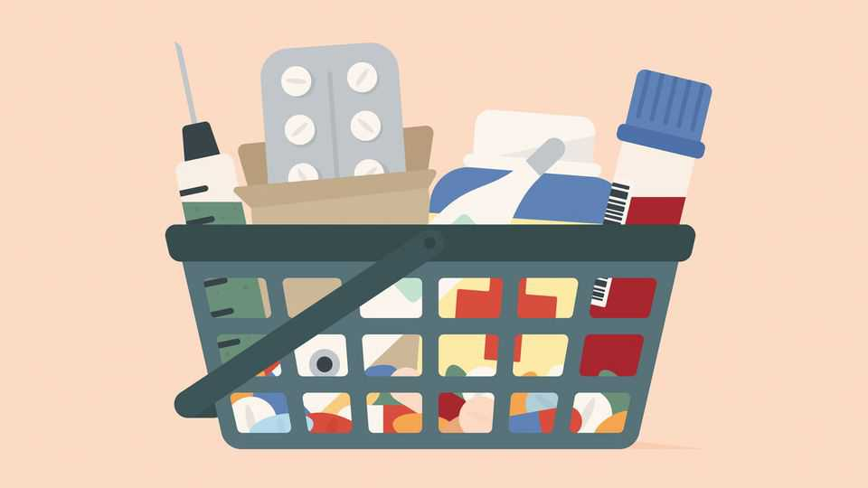

Patients are acting more like consumers. Good
Health care cannot be an ordinary market. But it could be much more like one

Nov 5th 2026
The person who uses a product usually chooses it and pays for it. The great exception is health care. Most of the time insurers (public or private) decide what is covered; doctors decide what is prescribed and patients take what they are given. The result is markets riddled with inefficiency, and nowhere more so than in America, the world’s biggest. This year Americans are expected to spend about $6trn on health, nearly a fifth of their country’s GDP. Yet for all that money, about one adult in ten could not get an appointment when they needed one last year, and more than a quarter put off or skipped care because of the cost.
No wonder patients are taking matters into their own hands. They pepper chatbots with questions such as how to decode a blood test or prepare for an appointment; every week more than 300m people ask ChatGPT about health, says OpenAI, its creator. The market for tests that patients order themselves has grown to be worth about $4bn a year in America, double its size in 2021, reckons Morgan Stanley, a bank. And drugmakers have started selling directly to patients. Eli Lilly, an American pharmaceutical giant, now fills about half of new prescriptions for its obesity jab in America this way, bypassing insurers. All three developments are good news.
One reason is that patient-led markets bring lower prices. Take drugs. In America their true cost is obscured by a tangle of middlemen and insurers, who negotiate secret discounts from inflated list prices. When patients pay directly, prices are transparent and drugmakers must compete. New obesity drugs are a good example. Novo, a Danish drugmaker, launched Wegovy in 2021 at a list price of about $1,350 a month. That led to a price war with Lilly, and competition from cheap copies. Both firms now sell their jabs direct to patients for as little as $300-350 a month. The same logic works for older products. Mark Cuban Cost Plus Drug Company, an online pharmacy founded by a billionaire, buys generics from their makers and sells them at cost plus a 15% mark-up. One study found that patients with employer-provided insurance who pay over $15 for a prescription could buy it more cheaply from Cost Plus nearly 80% of the time.
When patients pay, firms also come up with new ways to sell to them. “Direct primary care”, where medical practices ditch insurers and charge patients a monthly fee instead, has grown by nearly a fifth per year since 2022, to more than 3,600 practices in America. Others, such as Amazon’s One Medical, treat common ailments on a pay-per-visit basis. Drugmakers are looking at treatments that consumers will pay for, even if insurers will not. Novo is eyeing treatments for hair loss, addiction and menopause, conditions that big pharma long dismissed as unworthy of serious research. Even fighting off ageing now attracts money.
Most profound of all is the erosion of the original source of market power: a doctor’s hold on medical knowledge. In 1963 Kenneth Arrow, an economist, said that health care could not work like an ordinary market partly because the information a doctor possesses is “necessarily very much greater than that of the patient, or at least so it is believed by both parties”. Technology has since narrowed that gap. Chatbots, though hardly infallible, translate medical jargon into plain English and set out the treatment options for a condition. Increasingly they work with patients’ own data, too.
Consumer-led health care carries dangers. The first is quackery. Websites and influencers peddle peptides and supplements that promise bigger muscles, better skin or a longer life. Many do nothing and some do harm. Regulators should make sure sellers do not lie about their products. Access matters, too. Nearly all consumer health care is paid for out of pocket, so for now it mostly serves the well-off. However, most innovations start out as luxuries and get cheaper.
No one will shop for doctors from the back of an ambulance. Complex and emergency care will stay with doctors, hospitals and insurers. But in the routine parts of medicine, patients can and should be treated as customers. A bloated, paternalistic industry has kept them waiting long enough. ■